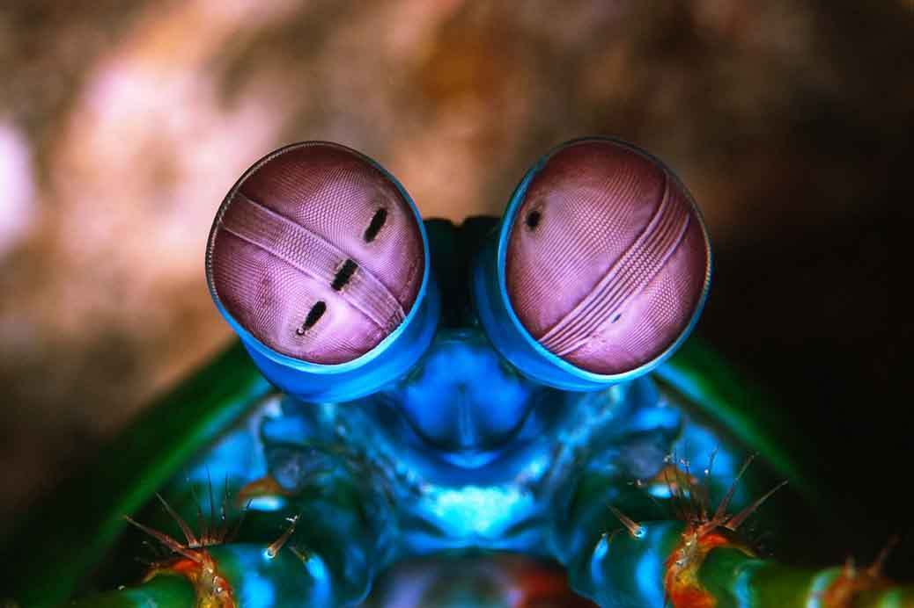

Fun facts about Stomatopoda
Hello, there! I'm Stomatopoda!
Stomatopoda crustaceans (mantis shrimps), cientific name: Odontodactylus scyllarus possess an incredibly complex visual system, comprised of compound eyes that contain more types of photoreceptors than in any other known animal. The mantis shrimp eye’s optical arsenal includes monocular range finding capability, 12-channel colour vision, 2 channel linear polarization detection, and, in some species, the ability to detect and analyze circularly polarized light. Underlying this unparalleled array of functional capabilities is a structural diversification of a basic photoreceptive unit common to all compound eyes the ommatidium.
Cientific classification:
| Kingdom: | Animalia |
|---|---|
| Phylum: | Arthropoda |
| Subphylum: | Crustacea |
| Class: | Malacostraca |
| Subclass: | Hoplocarida |
| Order: | Stomatopoda |
Hypnotic eyes!
Mantis Shrimps shows the eye of the scaly-tailed mantis , Lysiosquilla scabricauda. It consists of upper and lower (dorsal and ventral) hemispheres separated by a narrow central band. A close examination of the eye’s surface reveals that each region consists of closely-spaced parallel rows of facets tiny ones in the hemispheres and much larger ones in the band. The hemispheres have many rows of facets but the band has only six. Looking beneath the surface reveals that each facet is the tip of an elongate structural unit, known as an ommatidium. All ommatidia are optically sensitive devices, but those in the band are the most complex, most functional, and most interesting.
For the next carnival, call Stomatopoda family!
When non-polarized sunlight enters the earth’s atmosphere it interacts with atmospheric molecules and is scattered (preferentially in the blue end of the spectrum) in all directions. When viewed at an angle of 90o to the incident beam, the scattered light appears linearly polarized, meaning that the electric vector of the light wave is along a line that is perpendicular to both the incident beam and the line of sight. The sky is therefore full of linearly polarized light. Many animal species (e.g. bees, locusts) have developed an ability to use this ambient polarization to navigate even when the sun is obscured.

References
- Blog Planetanimalzone > Accessed on November 12th, 2020